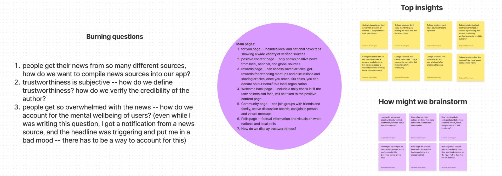
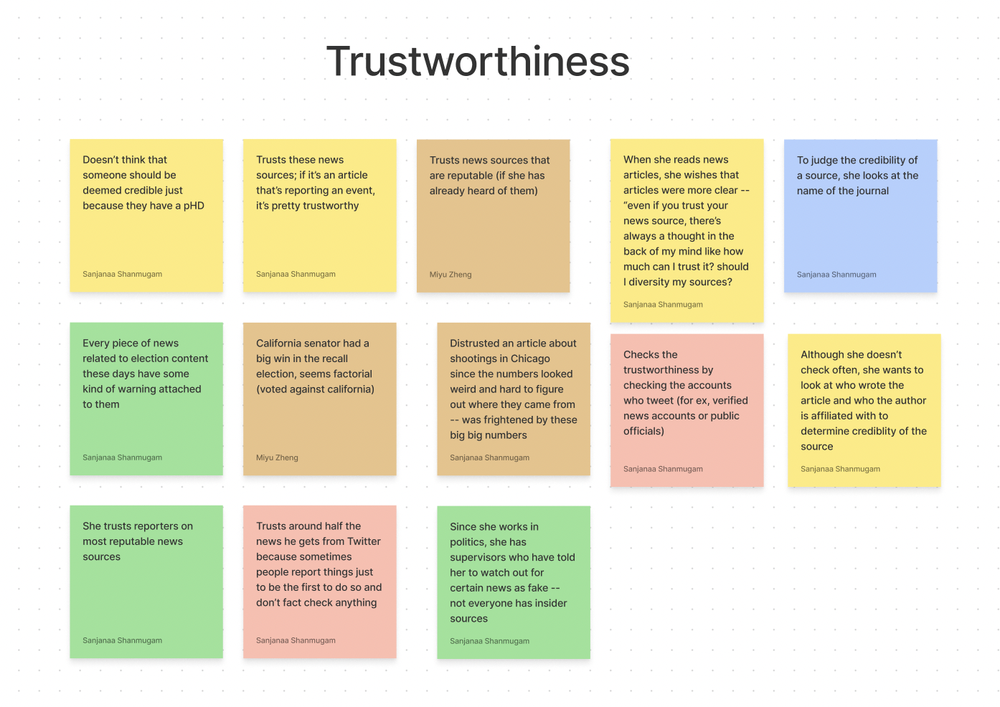
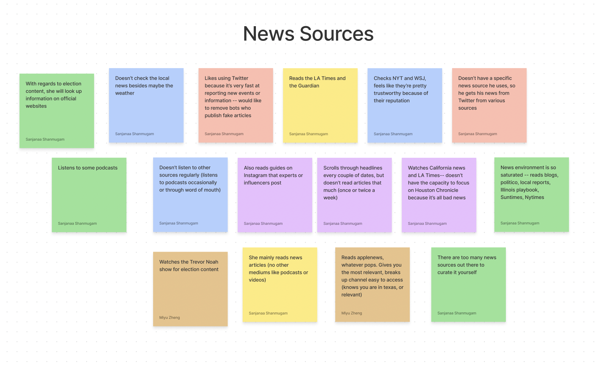
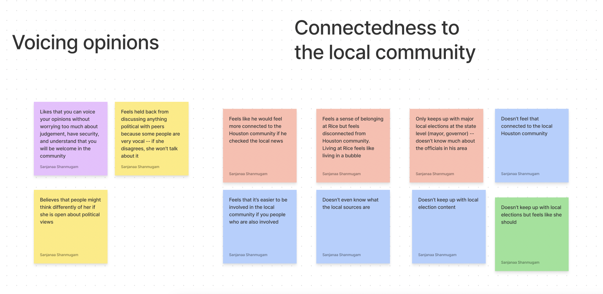
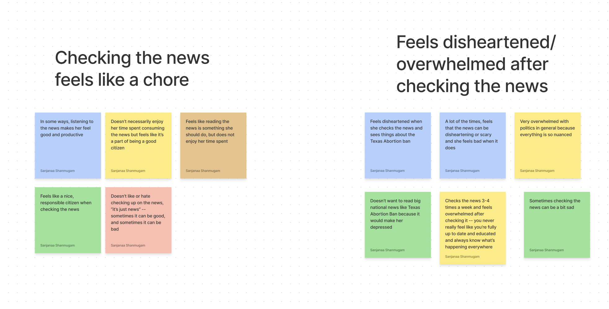
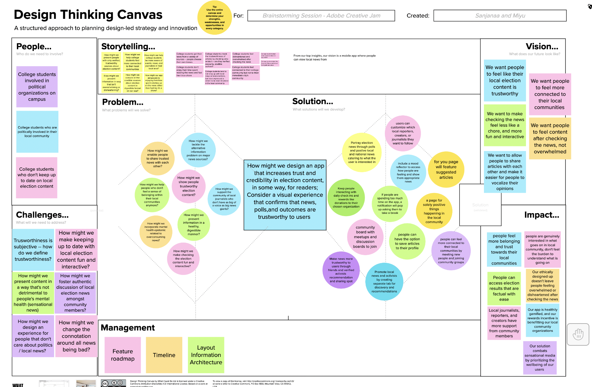
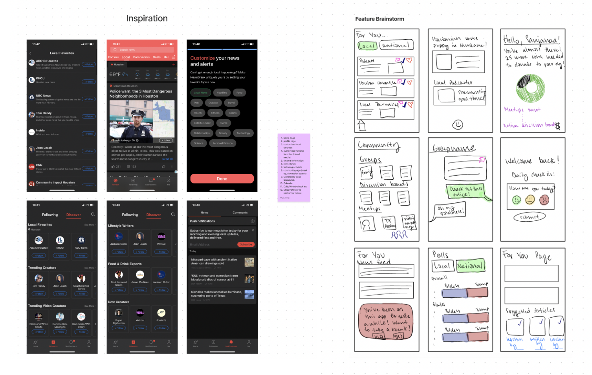
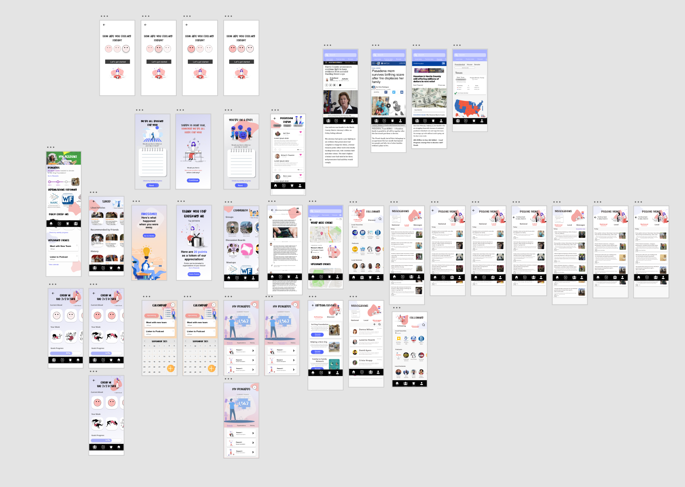

Ketch-up App
Sept 14 - Sept 28
Sanjanaa Shanmugan and Miyu Zheng
Abstract
Ketch-up! ("Catch Up") is a mobile app that helps college students feel more socially and politically connected to their local communities in a fun, interactive, and non-overwhelming way. Our solution includes unique features to make checking the news feel less like a chore and less overwhelming, which are two of our users’ biggest pain points. Some features include a customizable home page where users can follow verified local reporters and activists, a community page where users can join active discussion boards and attend local meetups together, a “positive news” page where users can see good things happening in the community, and a daily mental health check-in before checking the news. All of our displayed content is fact-checked by an algorithm that analyzes various factors we identified as contributing to trustworthiness from our interviews. Visually, we wanted the look and feel to be lively and playful to align with our brand identity.
Defining the Problem Space
To define our problem space and brainstorm, Sanjanaa and I used tools such as Figjam and Mural to start off with burning questions and ways we might brainstorm and tackle the questions.
Brainstorming
We started brainstorming with an affinity diagram and tackling different areas of the problem space which were news sources, trustworthiness, checking the news feels like a chore, feeling disheartened/overwhelmed after checking the news, voicing opinions and connectedness to the local community.     We also used a Design Thinking Canvas from Mural to brainstorm who our users would be, challenges, problem, solution, vision and impact.
User Profiles
After the initial brainstorming, we created some potential user profiles by interviewing college students about their experience with new apps and their trustworthiness and compiling top pain points to focus on.

Inspiration and Initial Features
We gathered inspiration from existing apps and defined the features we wanted to include in the app. The features we wanted to implement included a community tab with groups that included their own discussion board and events. We also wanted to focus on the mental health and well being of users so we created a daily/weekly mood tracker and reflection that would filter out negative and overwhelming news for the day. To ensure trustworthiness, there would be pages with polls and data for elections compiled from multiple sources. We also wanted to ensure that this app would be personalized for the user with a personal profile and For you page. There were several interactions for the screens and features before we settled on the design.
Final Design
To make our prototype, we used Adobe XD to layout and design the interfaces. Sanjanaa and I also used resources such as UX Library to implement icons and images that would fit the blue and pink theme. We wanted to ensure that all the interfaces were easily navigable and accessible as well as satisfying and fun for students to use. Here are some highlights of the app: Prototype Demo
